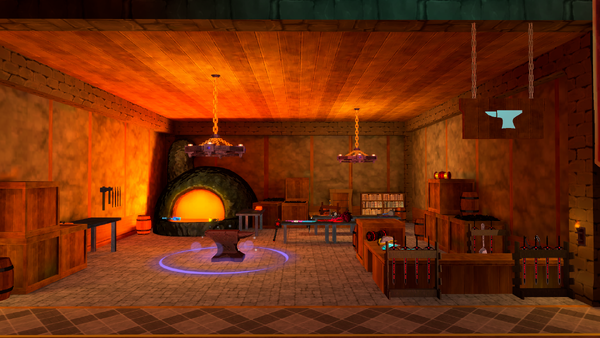
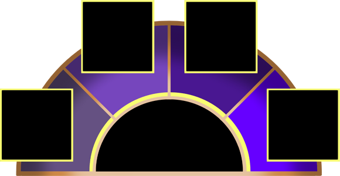
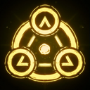
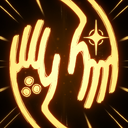

Runes（符文）
Rune 是开局前可以装备的强力升级。不过，在随机解锁一个 Rune 之前，你需要先完整通关一次。
你可以在开局大厅的 Workshop Anvil 装备 Rune。

Rune 一共有四个装备槽位，但第一个 Rune 升级要到 Penumbral 阶段才会激活。之后每个槽位的激活阶段要求会继续提高，直到 Eclipse。

注意：截至 Patreon Playtest Demo，只能使用 Penumbral 和 Antumbral 两个 Rune 槽位。不过要小心：Rune 虽然强大，也会同时激活一个随机且强力的 Runic Curse。
Patreon Release 版本目前共有 17 个 Rune。
Rune
| 图片 | 名称 | 效果 |
|---|---|---|
| Focus Growth | 暴击率 +10%（每个阶段再 +10%）。 | |
| Cleansing Growth | 获得少量对所有负面状态效果的抗性（每个阶段提高抗性）。 | |
| Recovery Growth | 辅助技能冷却 -15%（每个阶段再 -15%）。 | |
| Power Growth | 伤害 +10%（每个阶段再 +10%）。 | |
| Dexterity Growth | 攻击速度 +30%（每个阶段再 +30%）。 | |
| Precision Growth | 暴击伤害 +15%（每个阶段再 +15%）。 | |
| Health Growth | 最大 HP +15（每个阶段再 +15）。 | |
| Satiety Growth | 受到治疗 +10%（每个阶段再 +10%）。 | |
| Defence Growth | 防御 +5%（每个阶段再 +5%）。 | |
| Rejuvenating Growth | 生命回复 +150%（每个阶段再 +150%）。 | |
| Skybound | 额外跳跃 +1（每个阶段再 +1）。 | |
| Way of the Turtle | 最大 HP +20%（每个阶段再 +10%）。 防御 +10%（每个阶段再 +10%）。 移动速度 -20%（每个阶段再 -20%）。 |
|
 |
Active Guard | 使用辅助技能时有 5% 几率获得 RESILIENCE 状态效果（每个阶段再 +2%）。 |
 |
Manic Gambit | 任何被献祭的 Artifact 会给予其属性的 300%（每个阶段再 +100%）。每个 stage 只能获得 1 个 Token。 |
| Big and Greedy | 找到额外 Token 的几率 +20%（每个阶段再
+20%）。 如果成功，有 50% 几率再找到另一个额外 Token。 |
|
| Big and Needy | 购买 COMMON 升级后返还 Token 的几率 +10%（每个阶段再 +5%）。 | |
| Big and Picky | 选择 upgrade 时获得 1 个额外选项，并获得一次重掷（每个阶段再 +1）。 | |
| Big and Insured | 获得 1 个 Token（每个阶段再 +1）。 |
Curse
Rune 激活时可能获得 14 种 Runic Curse。每次获得的 Curse 都是随机的，而且可以重复获得同一种。
Penumbral Rune 会给你 1 层 Curse，Antumbral Rune 会给你 2 层 Curse，之后依此类推。
| 图片 | 名称 | 效果 |
|---|---|---|
| Runic Curse: Fragility | 你更容易受到 PHYSICAL 伤害。 | |
| Runic Curse: Smolder | 你更容易受到 FIRE 元素伤害。 | |
| Runic Curse: Fever | 你更容易受到 FROST 元素伤害。 | |
| Runic Curse: Conductor | 你更容易受到 ELECTRIC 元素伤害。 | |
| Runic Curse: Profane | 你更容易受到 LUMINOUS 元素伤害。 | |
| Runic Curse: Divine | 你更容易受到 SHADOW 元素伤害。 | |
| Runic Curse: Rot | 你更容易受到 POISON 元素伤害。 | |
| Runic Curse: Tremor | 你的投射物会产生偏差。 | |
| Runic Curse: Drain | 你的最大 HP 会降低。 | |
| Runic Curse: Shedding | 你的总防御会降低。 | |
| Runic Curse: Anaemia | 你的总生命回复会降低。 | |
| Runic Curse: Hypoxia | 受到治疗会降低。 | |
| Runic Curse: Light | 你会受到来自敌人的更多击退。 | |
| Runic Curse: Asthma | 你的辅助技能冷却会增加。 |